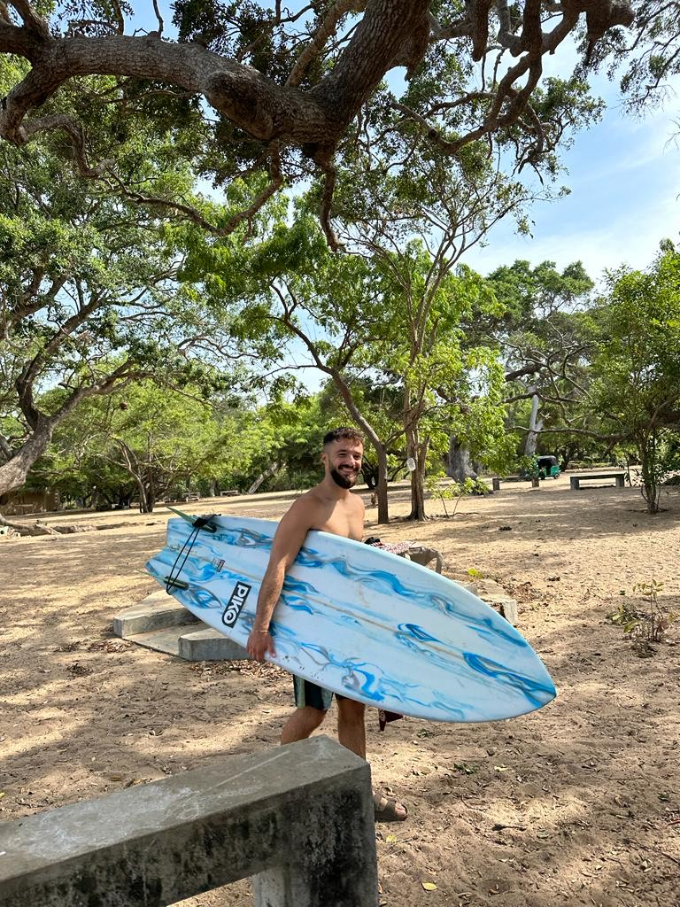

I'm Ido Cohen
I'm an ISM student at Ben-Gurion University.
I work at B-Online as an IT Specialist & BI Assistant.
My Skills & Hobbies

Data & Innovation
I'm passionate about data, BI, analytics, and innovation. I enjoy building digital solutions and exploring new technologies.

Surf Life
I started surfing after my army service trip, and since then it became my favorite hobby.
I've surfed in Sri Lanka, Portugal, Brazil, and Peru.

Maccabi Haifa Fan
I'm a proud Maccabi Haifa fan, Yalla Maccabi Yarok Olle!